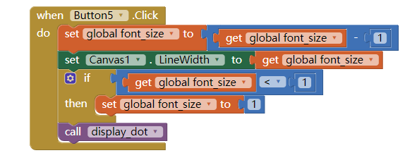

1)For enhancement #6 (the if/else exercise) give a brief description of your solution to this problem. Provide a screen shot of your code -- the revised blocks -- and describe how the if/else block works to solve the problem in this case. If appropriate, include a description of any significant problems or bugs you encountered in solving this problem. App Inventor now has a Download Blocks as Image feature (right click on the white space in the blocks editor to choose) that also can be used to take a screenshot of all of your code or the Windows snipping tool can be used.

For the (the if/else exercise),we have to create a button to decrease dot size,but you can't get the dot size to be negative,so we use if/else block to work with every time you click on the button that decrease dot size.To set if/else block to if the dot size is less than 1,then set the dot size to 1.
2)When you use the Camera component to take a picture as the Canvas background, explain why the picture goes away when the app is restarted. HINT: Think about the different hardware components we talked about in an earlier lesson and where on the device the picture is stored. What do you think could be done to prevent the picture from disappearing when the app is restarted?
When you use the Camera component to take a picture as the Canvas background, the picture goes away when the app is restarted because the pictures don't store in the phone local disk,it store in RAM,and your RAM store data that is currently use,and erase the data that don't run currently.To prevent the picture from disappearing when the app is restarted,you can creat a code for saving your canvas image.